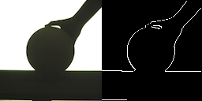

球体への動的投影に向けた輪郭情報に基づく高速球体検出
広域運動する球体対象へのプロジェクションマッピングシステム[2]では，球体を掴む手やバウンド時のテーブルなどの遮蔽が検出時のノイズとなり，追従投影がロバストでない問題があった．
本研究では，輪郭情報を利用し，RANSACをベースとした検出アルゴリズムを提案した．評価実験により，球体の輪郭の50%までの遮蔽では誤差が小さいなど，アルゴリズムが高速高精度であることを示した．したがって，従来よりも頑健な追従及び動的投影を実現したといえる．

図1 球体の輪郭を多分に覆い隠す両手の把持にも頑健で，キャッチボールの最中にプロジェクションマッピングが継続する様子．

図2 輪郭抽出の様子．
参考文献
- 三河祐梨，末石智大，石川正俊： 動的プロジェクションマッピングに向けた輪郭情報に基づく高速球体トラッキング， 第22回日本バーチャルリアリティ学会大会論文集, 1E4-03 (2017)
- Tomohiro Sueishi, Hiromasa Oku, and Masatoshi Ishikawa: Lumipen 2: Dynamic Projection Mapping with Mirror-based Robust High-speed Tracking against Illumination Changes, PRESENCE: Teleoperators and Virtual Environments, MIT Press, Vol. 25, Issue 4, pp. 299-321 (2017)